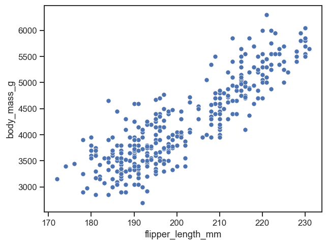
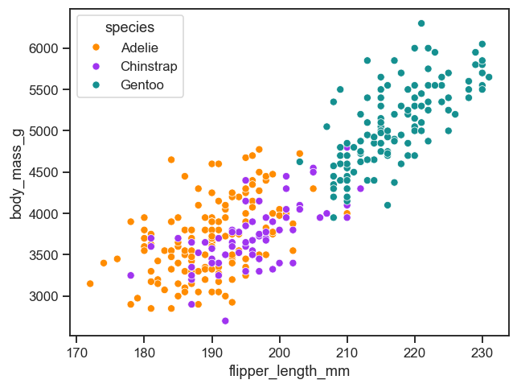
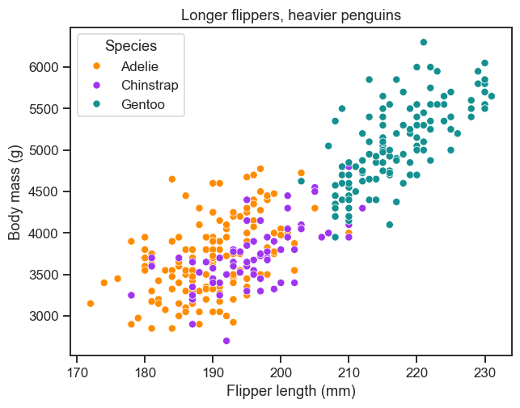
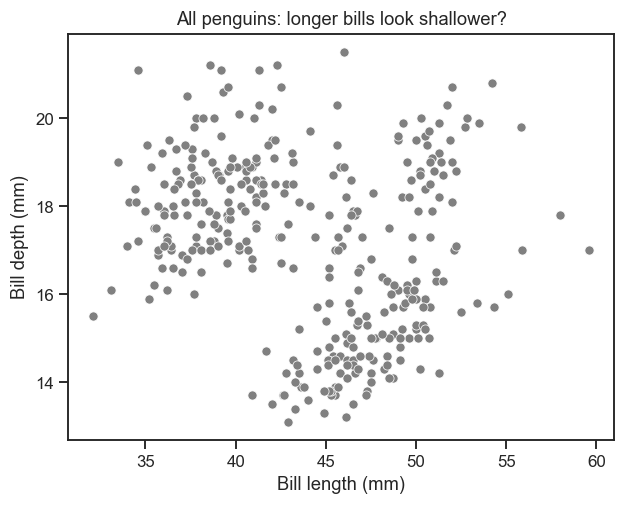
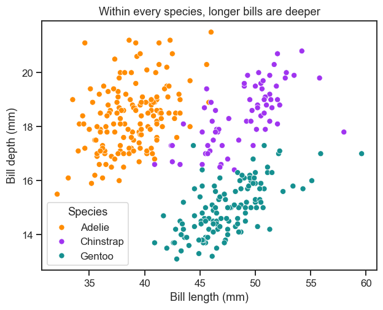
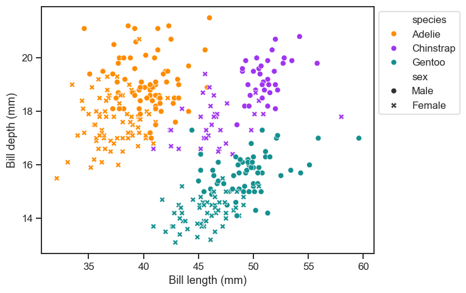
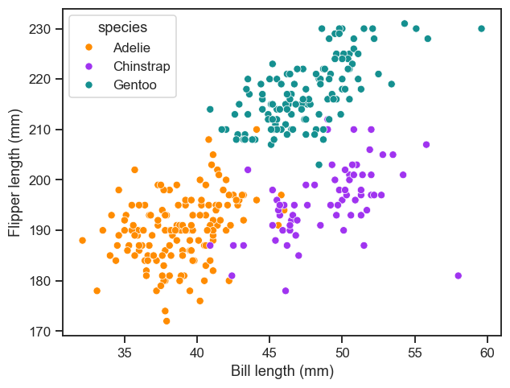
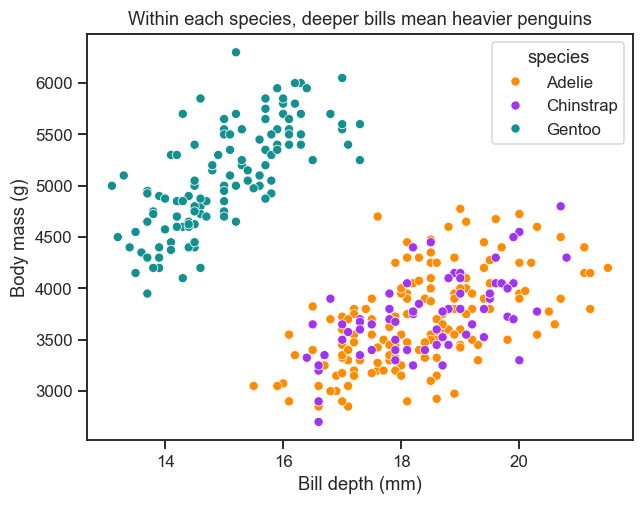

Lesson 1 - Your first plot: the grammar of seaborn
Seaborn has one big idea: you hand it a DataFrame, then tell it which column goes on which visual channel. Learn that idea and the rest of the library follows.
By the end of this lesson you can:
- describe seaborn’s “columns → visual channels” grammar
- draw a scatter plot and color it by a category with
hue - label a chart properly through the matplotlib
Axesthat seaborn returns - spot a hidden grouping variable that flips a trend (Simpson’s paradox)
Every page starts with the same setup cell. The in-browser editors run it for you before each cell. In your own notebook, run it once at the top.
import pandas as pd
import matplotlib.pyplot as plt
import seaborn as sns
sns.set_theme(style="ticks")
penguins = sns.load_dataset("penguins")
# Fixed colors, reused on every chart in this course: one per species, and two
# grays for sex so that the species colors never mean anything else
PENGUIN_COLORS = {"Adelie": "#FF8C00", "Chinstrap": "#A034F0", "Gentoo": "#159090"}
SEX_COLORS = {"Female": "#8c8c8c", "Male": "#333333"}
Meet the penguins
Each row is one penguin measured near Palmer Station, Antarctica.
penguins.head()
species island bill_length_mm ... flipper_length_mm body_mass_g sex 0 Adelie Torgersen 39.1 ... 181.0 3750.0 Male 1 Adelie Torgersen 39.5 ... 186.0 3800.0 Female 2 Adelie Torgersen 40.3 ... 195.0 3250.0 Female 3 Adelie Torgersen NaN ... NaN NaN NaN 4 Adelie Torgersen 36.7 ... 193.0 3450.0 Female [5 rows x 7 columns]
A few numbers are missing (NaN). Seaborn quietly drops missing values for each plot, so we can leave them in.
penguins.isna().sum()
species 0 island 0 bill_length_mm 2 bill_depth_mm 2 flipper_length_mm 2 body_mass_g 2 sex 11 dtype: int64
The one idea behind seaborn
Seaborn wants tidy data: one row per observation, one column per variable. You don’t loop over rows or build lists of coordinates. You name columns, and seaborn maps each one to a visual channel:
| Argument | Visual channel | Typical column |
|---|---|---|
x, y |
position | numbers, or categories for bar/box charts |
hue |
color | a category (species), or a number |
style |
marker shape / line dash | a category with few levels |
size |
marker size / line width | a number |
A first scatter plot
sns.scatterplot(data=penguins, x="flipper_length_mm", y="body_mass_g")

That’s a real chart in one line. Seaborn picked the axis labels from the column names, chose sensible limits, and dropped the two penguins with missing measurements.
Tip: Click Edit & run under any example to open it in a live editor. Change a column name and run it again. The first run downloads Python into your browser and takes a little while.
Add a third variable with hue
sns.scatterplot(
data=penguins,
x="flipper_length_mm",
y="body_mass_g",
hue="species",
palette=PENGUIN_COLORS,
)

hue mapped species to color and added a legend. Passing palette= a dictionary pins each species to its own color. That matters more than it sounds.
Color follows the thing, not its position
If Gentoo is teal on one chart, it should be teal on every chart. Readers learn your color code once, then reuse it. A dict palette guarantees this even when a filter drops a species. A list of colors would be handed out by position and could repaint the survivors.
Labels are part of the chart
Every “axes-level” seaborn function (scatterplot, histplot, boxplot, …) draws onto a matplotlib Axes and returns it. Keep that object and you can finish the chart with matplotlib:
ax = sns.scatterplot(
data=penguins,
x="flipper_length_mm",
y="body_mass_g",
hue="species",
palette=PENGUIN_COLORS,
)
ax.set(
xlabel="Flipper length (mm)",
ylabel="Body mass (g)",
title="Longer flippers, heavier penguins",
)
ax.get_legend().set_title("Species")

The legend’s title is a label too. Seaborn copies it from the column name, so the last line rewrites it in the same plain English as the axes.
A title should state the finding
“Flipper length vs body mass” just names the axes, which the reader can already see. “Longer flippers, heavier penguins” tells them what to notice. Always include units in axis labels: raw names like body_mass_g read as code, not English.
Plot twist: the paradox in the bills
Do penguins with longer bills have shallower bills? Look at all of them together:
ax = sns.scatterplot(data=penguins, x="bill_length_mm", y="bill_depth_mm", color="gray")
ax.set(xlabel="Bill length (mm)", ylabel="Bill depth (mm)",
title="All penguins: longer bills look shallower?")

The cloud slopes down. Now ask seaborn to split it by species:
ax = sns.scatterplot(
data=penguins,
x="bill_length_mm",
y="bill_depth_mm",
hue="species",
palette=PENGUIN_COLORS,
)
ax.set(xlabel="Bill length (mm)", ylabel="Bill depth (mm)",
title="Within every species, longer bills are deeper")
ax.get_legend().set_title("Species")

Within each species the trend goes up. The downward slope came from mixing groups: Gentoos have long but shallow bills, Adelies short but deep ones. This is Simpson’s paradox, and one hue= argument exposed it. Whenever you see a trend, ask: what grouping might be hiding in here?
More channels: style and size
ax = sns.scatterplot(
data=penguins,
x="bill_length_mm",
y="bill_depth_mm",
hue="species",
palette=PENGUIN_COLORS,
style="sex",
)
ax.set(xlabel="Bill length (mm)", ylabel="Bill depth (mm)")
sns.move_legend(ax, "upper left", bbox_to_anchor=(1, 1)) # park the legend outside the data

Within each species, the males (circles) sit up and to the right. They have bigger bills. Seaborn hands out markers, and colors, in the order the categories first appear in the data. The first penguin in the table is male, so males got the circle. Pass hue_order= or style_order= when you want to fix that order yourself. sns.move_legend moved the now-crowded legend off the data. Use these extra channels sparingly. Each one adds a block to the legend that the reader must decode (seaborn heads each block with the raw column name), and shape is much weaker than position or color.
Your turn
Replace each ___ with real code, then press Run & check. The checker inspects your chart and gives hints. Your edits are saved in this browser.
Show a solution
ax = sns.scatterplot(
data=penguins,
x="bill_length_mm",
y="flipper_length_mm",
hue="species",
palette=PENGUIN_COLORS,
)
ax.set(xlabel="Bill length (mm)", ylabel="Flipper length (mm)")
ax.get_legend().set_title("Species")

Show a solution
ax = sns.scatterplot(
data=penguins,
x="bill_depth_mm",
y="body_mass_g",
hue="species",
palette=PENGUIN_COLORS,
)
ax.set(
xlabel="Bill depth (mm)",
ylabel="Body mass (g)",
title="Within each species, deeper bills mean heavier penguins",
)
ax.get_legend().set_title("Species")

Quick quiz
Q1. In sns.scatterplot(data=penguins, x="flipper_length_mm", y="body_mass_g"), what does data= expect?
data=, then refer to its columns by name.Q2. What does adding hue="species" to a scatter plot do?
hue maps a column to color. Separate subplots come from col=/row= in figure-level functions (Lesson 5); marker shape is style=.Q3. What do axes-level functions such as sns.scatterplot return?
Axes is how you add labels, titles, reference lines and annotations with matplotlib.Q4. Across all penguins, longer bills look shallower, but within each species longer bills are deeper. What’s the lesson?
hue=) is the cheapest way to check for it.Key takeaways
- Pass a tidy DataFrame with
data=, then map columns to channels:x,y,hue,style,size. - Use a dict palette so each category keeps its color on every chart.
- Keep the returned
axand finish the chart: plain-English labels with units (the legend title too), and a title that states the finding.